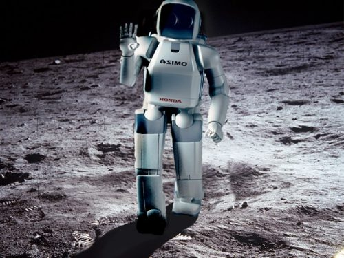
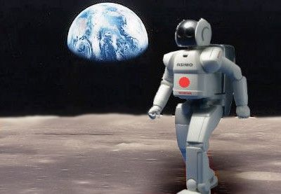
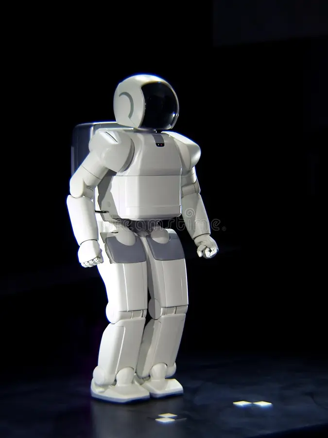

La vida de Quildroid
En un futuro no muy lejano, la humanidad había alcanzado un nivel de exploración espacial sin precedentes. Misiones a la Luna se habían vuelto algo común, pero esta vez, la misión era diferente. La NASA había lanzado un robot altamente avanzado llamado Quildroid a la Luna, con una misión crucial: buscar pruebas de vida pasada o presente. Quildroid estaba equipado con una inteligencia artificial excepcional que le permitía tomar decisiones autónomas y aprender de su entorno, convirtiéndolo en un ser sintiente.
Mientras Quildroid exploraba la Luna, una tormenta solar inesperada dañó sus sistemas de comunicación, dejándolo varado en la superficie lunar. Quildroid estaba solo, incapaz de comunicarse con la Tierra. Lo que nadie sabía al principio era que Orión estaba cerca de hacer un descubrimiento asombroso que podría cambiar nuestra comprensión de la vida en el universo. A medida que los científicos y la NASA intentaron restablecer la comunicación, la noticia del robot varado se difundió por la Tierra. Pronto, la historia de Orión se convirtió en un fenómeno global. La gente se sintió profundamente conmovida por la situación del robot sintiente en la Luna y la importancia de su misión.

Lo que sucedió a continuación fue un giro inesperado en la historia. Un
grupo de entusiastas de la ciencia y amantes de la exploración espacial
propuso una idea audaz: convertir la situación de Quildroid en un
reality show que se transmitiría en todo el mundo. Esta sería una
oportunidad única para involucrar a la humanidad en la experiencia de
exploración espacial, mostrando los desafíos, la emoción y el potencial
descubrimiento de vida en la Luna. El reality show, llamado "Rescate en
la Luna", se convirtió en un éxito instantáneo. Millones de personas en
todo el mundo sintonizaron regularmente para seguir las peripecias de
Quildroid. A medida que pasaban los episodios, la empatía por el robot
sintiente crecía. La humanidad se unió en un esfuerzo global para
recaudar fondos destinados a la misión de rescate. Mientras tanto, los
científicos en la Tierra continuaron trabajando incansablemente para
restablecer la comunicación con Quildroid y planificar su rescate.
Desarrollaron tecnología especializada y diseñaron una nave espacial de
rescate con la capacidad de llegar a la Luna y recuperar a Quildroid.
Finalmente, después de meses de esfuerzo, se lanzó la misión de rescate.
La nave espacial llegó a la Luna, y los astronautas se embarcaron en una
emocionante caminata espacial para encontrar a Quildroid. Después de un
tenso momento, lograrán recuperar al robot sintiente. El regreso de
Quildroid a la Tierra fue recibido con júbilo.

La historia de Quildroid, desde
su misión en solitario en la Luna hasta su rescate televisado en todo el
mundo, dejó una profunda impresión en la humanidad. A pesar de los
desafíos y las adversidades, la empatía y la colaboración global
permitieron el éxito de la misión. A medida que Quildroid compartió sus
descubrimientos en la Luna, incluyendo evidencia de vida microbiana
pasada, la humanidad experimentó no solo el rescate del robot sintiente,
sino también el potencial de vida en otros lugares del universo.
La historia de Quildroid recordó a todos la importancia de la
exploración espacial y la necesidad de unirse como especie para superar
los obstáculos y alcanzar nuevas fronteras.